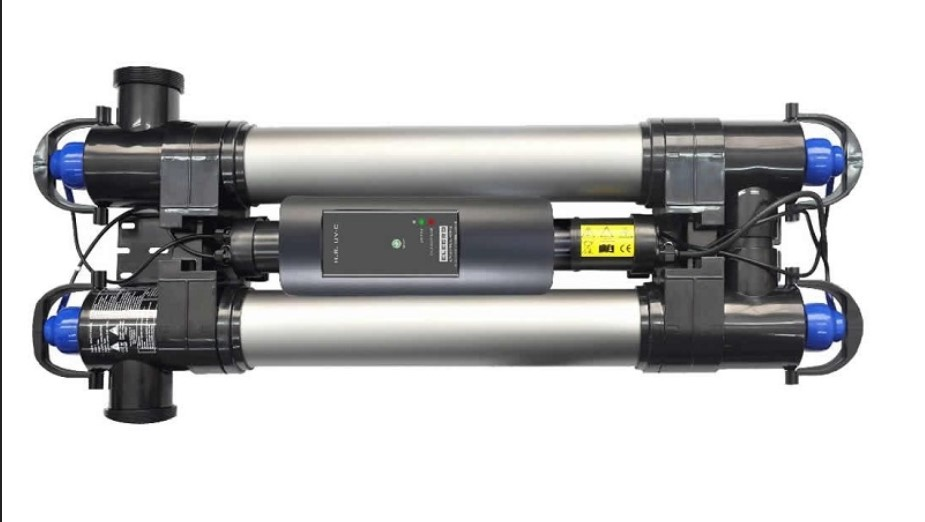

Введение
Ультрафиолет для бассейна: что он делает и чего не заменяет
Ультрафиолетовый реактор обрабатывает воду, которая проходит через его камеру. Это дополнительная ступень в циркуляционном контуре, а не способ обеззаразить всю чашу разом: после прохождения реактора вода снова смешивается с водой бассейна.
Поэтому перед выбором важно понять задачу: хотят ли дополнить водоподготовку, уменьшить образование некоторых побочных соединений или решить конкретную проблему с водой. От задачи зависят требуемая доза излучения, фактический расход через установку и подходящая схема обработки.

Оглавление
Что разберем в статье
Разберём, как работает УФ-реактор, чем его паспортные параметры отличаются от мощности лампы и что проверить до монтажа. УФ не отменяет фильтрацию и контроль дезинфектанта в чаше.
- Фильтрация воды для бассейна — базовая статья о насосах, фильтрах и обороте воды.
- Баланс pH воды в бассейне — как pH влияет на комфорт, реагенты и ресурс оборудования.
- Обслуживание бассейна — регламент регулярного сервиса частной чаши.
- Автоматизация бассейна — сценарии управления инженерией, светом и водоподготовкой.
- Бассейн без хлора — что реально означает мягкая водоподготовка и какие ограничения важно учитывать.
Принцип работы
Как ультрафиолет действует на проходящий поток воды
Вода проходит через реактор и получает ультрафиолетовое облучение. Эффект определяется не названием «УФ-лампа» и не только её электрической мощностью, а совокупностью параметров: конструкцией камеры, интенсивностью излучения, временем контакта, пропусканием ультрафиолета водой и расходом через устройство.
Доза зависит от установки и режима потока
Увеличение потока сокращает время пребывания воды в камере; поэтому максимальный расход и расход, при котором производитель подтверждает требуемую дозу, могут различаться. Сверяйте именно паспортные показатели выбранной модели и условия, при которых они получены.
УФ действует в камере. Он не оставляет в чаше остаточного дезинфектанта и не заменяет механическую фильтрацию, химический баланс или регулярное измерение воды. Основы циркуляции и фильтров разобраны в статье о фильтрации воды в бассейне.
Некоторые УФ-системы используют как дополнительный этап для воздействия на микроорганизмы и отдельные соединения, образующиеся при обработке воды. Результат зависит от типа установки, дозы, расхода и состава воды; он не позволяет обещать отсутствие запаха или проблем с качеством воды.
Для бассейнов с химическим обеззараживанием сохраняйте контроль дезинфектанта и pH. Более широкое сравнение способов обработки приведено в отдельном материале о бассейне без хлора.
Подбор
Как выбрать УФ-установку для бассейна
Начните с фактического расхода воды в циркуляционном контуре и задачи установки. Подбирайте реактор по заявленной дозе при этом расходе и по условиям, для которых изготовитель приводит свои характеристики; один только объём чаши или мощность лампы недостаточны.
Что запросить у производителя и проверить в проекте
- Реальный расход через реактор и подтверждённая изготовителем доза при таком расходе.
- Условия испытания: качество воды и UVT (пропускание ультрафиолета), если параметр указан производителем.
- Тип лампы, ресурс и критерии её замены, контроль излучения и сигналы неисправности.
- Совместимость материалов с водой и применяемой системой обеззараживания.
- Требования к монтажу, давлению, температуре, доступу и обслуживанию по руководству.
Уточните, для какого качества и ультрафиолетового пропускания воды рассчитана модель, как учитывается старение лампы, есть ли контроль её работы и что показывает индикация. Если изготовитель не приводит дозу при нужном расходе, сравнить эффективность по ваттам нельзя.
Проверьте материал корпуса и уплотнений, допустимые давление, температуру и солёность, если применяется электролиз. Узнайте, как осматривать и чистить кварцевый кожух, когда менять лампу и можно ли безопасно изолировать устройство для сервиса.
Размещение реактора и его порядок в контуре сверяйте с инструкцией модели и схемой бассейна. Учитывайте доступ для обслуживания, совместимость с насосом и фильтром, а также ограничения изготовителей соседнего оборудования.
Сравнение
Варианты применения ультрафиолета в водоподготовке
| Схема | Роль УФ-установки | Что остаётся обязательным |
|---|---|---|
| Без УФ-реактора | Вода обрабатывается другими предусмотренными проектом методами. | Поддерживать циркуляцию, фильтрацию и требуемые показатели воды. |
| УФ как дополнительная ступень | Обрабатывается поток, прошедший через камеру; эффект ограничен параметрами реактора и расходом. | Сохранять контроль дезинфектанта в чаше и обслуживать установку. |
| УФ с мониторингом параметров | Если конкретная модель имеет датчики, система может показывать часть рабочих параметров или неисправностей. | Проверять, какие именно параметры измеряются; индикация не заменяет контроль воды и уход. |
Наличие УФ не превращает схему в автоматическую «безреагентную» систему. Для сравнения дополнительных технологий обеззараживания и ограничений безхлорных схем см. отдельную статью.
Пошаговая инструкция
Что учесть при подключении и обслуживании
- Сверить расход в контуре с диапазоном, для которого производитель подтверждает необходимую дозу.
- Расположить реактор и арматуру по схеме и монтажным требованиям выбранной модели.
- Сверить положение реактора относительно фильтра с монтажной схемой производителя; порядок подключения зависит от модели и схемы обработки.
- Сохранить контроль химических показателей воды и дезинфектанта в чаше.
- Записать порядок проверки лампы и очистки кварцевого кожуха по руководству; сроки обслуживания не переносить с другой модели.
После монтажа проверьте направление потока, герметичность и показания предусмотренных датчиков. Не запускайте оборудование в режиме, запрещённом его изготовителем.
УФ-реактор может быть частью комплекса, но не решает сам по себе причины мутности, запаха или нестабильного pH. Для разборов симптомов воды используйте материал об очистке воды и проблемах с ней.
Ошибки
Ошибки при выборе и эксплуатации УФ-реактора
- Считать, что ультрафиолет заменяет остаточный дезинфектант во всей чаше.
- Выбирать реактор по ваттам, не сверяя дозу при реальном расходе и качестве воды.
- Предполагать, что УФ заменит фильтр, исправит pH или устранит причину запаха.
- Не учитывать загрязнение кожуха, старение лампы и ограничения конкретного руководства.
Установка, выбранная по мощности лампы или диаметру соединений, может не обеспечивать необходимую обработку при фактическом расходе. Решающее значение имеют подтверждённые параметры реактора и качество воды, а не только внешний размер устройства.
Решения
Что проверить перед вводом в эксплуатацию
- Записать паспортный расход и условия, при которых производитель подтверждает дозу.
- Зафиксировать действия при индикации отказа или недостаточного потока.
- Внести проверку кожуха и замену лампы в регламент конкретной модели.
Передайте владельцу паспорт установки, укажите модель лампы и порядок осмотра и замены. Если реактор связан с контроллером, отдельно объясните, что именно он контролирует и какие действия остаются ручными.
CTA
Подбор УФ-реактора для бассейна
Для первичной оценки подготовьте схему циркуляции, фактический расход, параметры воды и описание задачи. Конкретный реактор выбирают по его документации и условиям проекта, не по номинальной мощности лампы.
- Получить расчет
FAQ
Ответы на частые вопросы
УФ убирает запах хлора?
УФ может воздействовать на часть хлораминов, если выбранная модель и режим работы рассчитаны на такую задачу. Запах зависит также от состава воды и эксплуатации; лампа не гарантирует, что он исчезнет.
Можно ли не добавлять хлор?
Сам УФ-реактор не оставляет остаточного дезинфектанта в чаше. Не отменяйте применяемую схему обеззараживания и контроль воды без отдельного обоснованного проекта.
Где устанавливается УФ?
Часто реактор включают в циркуляционный контур после механической фильтрации, но точное положение, расход и обвязку определяют по схеме бассейна и инструкции модели.
Как часто менять лампу?
Срок службы лампы и порядок её замены указаны в документации конкретного устройства. То, что лампа продолжает светиться, само по себе не подтверждает достаточную интенсивность УФ-излучения.
Подходит ли для бассейна в доме?
УФ можно рассматривать как дополнительную ступень, но решение зависит от проекта помещения и водоподготовки. Для закрытого бассейна отдельно оценивают качество воды и вентиляцию; одна лампа не заменяет эти меры.